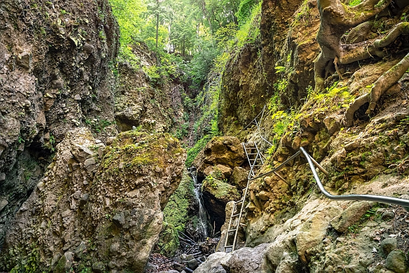

Rám-szakadék
"A Rám-szakadék lenyűgöző természeti szépsége miatt méltán tartozik a térség legismertebb kirándulóhelyei közé, amit nem csak a környékről, hanem az egész országból sokan felkeresnek: a látogatók éves száma meghaladja a 60.000 főt."
"A szakadék maga egy vulkáni eredetű, nagyjából észak-déli irányban futó szurdokvölgy. Összeszűkülő sziklafalai olykor merőlegesek, de vannak befelé dőlő falak is. Mélysége több helyen meghaladja a 35 métert, míg szélessége helyenként a 3 métert sem éri el. A sziklamederben állandóan csörgedezik a víz, amely hóolvadáskor és nagyobb esők idején patakká duzzadhat. A szurdokban összességében 112 méteres szintkülönbséget kell leküzdeniük a túrázóknak. A puha tufában magas, függőleges falak, a víznek ellenálló keményebb lávarétegeken pedig zúgók, vízesések alakultak ki."
"A turisták közlekedését kiépített korlátok, kapaszkodók segítik elő. A meredekebb részeken, a kapaszkodóknál pedig kőbe vájt kisebb üregek biztosítják lépcsőszerűen a kiránduló biztonságos feljebb jutását. A zuhatagok mellett több helyen is biztonságos létrák adnak segítséget a több méteres szintkülönbségek legyőzésére. A völgy alsó és felső bejáratánál erdei pihenőhely fogadja az érkezőket. A Rám-szakadék természeti adottságai miatt egyike a legnehezebben járható magyarországi jelzett turistautaknak. Megközelítés: Dömös határából érdemes indulni a piros-zöld-sárga sáv jelzésen, a szakadékba a zöld sáv jelzésre kell rátérni."
Forrás: https://parkerdo.hu/turizmus/latnivalok/ram-szakadek/
